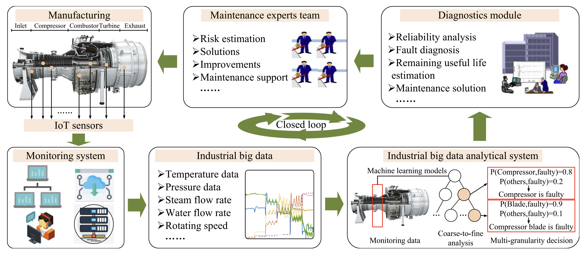

Ruonan Liu
Associate Professor
Office: Room 530, Building 2, School of Electronic Information and Electrical Engineering, Shanghai Jiao Tong University
Email: ruonan.liu@sjtu.edu.cn
Hi all, I am Ruonan Liu, currently a tenure-track associate professor in Department of Automation, Shanghai Jiao Tong University. Previously, I was a postdoctoral researcher at School of Computer Science, Carnegie Mellon University and the Alexander von Humboldt Fellow with the University of Duisburg-Essen, Duisburg, Germany. Before that, I received the B.S., M.S., and Ph.D. degrees from Xi'an Jiaotong University, Xi'an, China, in 2013, 2015, and 2019, respectively.
My research focuses on Machine learning, Vision-language navigation (VLN) and Industrial Cyber-Physical Systems (ICPS). Now I am serving as the Special Session Chair for the 23nd IEEE International Conference on Industrial Informatics (INDIN 2025), the Leading Guest Editor/ Associate Editor for three journals: IEEE Transactions on Industrial Cyber-Physical Systems, Sustainable Energy Technologies and Assessments, Frontiers in Artificial Intelligence. And I am the Technical Committee Member of IEEE Industrial Electronics Society.
Research
Vision-and-Language Navigation
Industrial Cyber-Physical Systems

Honors
- Runner-up Paper Award, IJCAI-W 2024
- Best Paper Award Finalist, IEEE ICARM 2024
- Alexander von Humboldt Fellow, 2022
- the World’s Top 2% Scientists, 2021, 2022, 2023, 2024
- the Young Elite Scientist Sponsorship Program, 2022
- IEEE Outstanding Paper Award for the IEEE TII (IF 11.7), 2021
- Media Report in IEEE IES News Homepage, 2021
- Graduate with Honor of Xi’an Jiaotong University, 2019
Service
- Special Sessions Chair for the 23nd IEEE International Conference on Industrial Informatics (INDIN 2025)
- Leading Guest Editor or Associate Editor for IEEE Transactions on Industrial Cyber-Physical Systems (IEEE TICPS), Sustainable Energy Technologies and Assessments (SETA)
- Session Chair of 31st IEEE International Symposium on Industrial Electronics (ISIE 2022)
- Session Chair of 5th and 6th Asian Conference on Artificial Intelligence Technology (ACAIT 2021 and ACAIT 2022)
- Technical Committee Member of IEEE Industrial Electronics Society on Data-Driven Control and Monitoring
Teaching
- Machine Learning, Tianjin University, Spring 2023, Fall and Spring 2022, Fall 2021